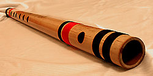

The bansuri is a transverse flute of South Asia made from a single hollow
shaft of bamboo with six or seven finger holes. An ancient musical instrument
associated with cowherds and the pastoral tradition, it is intimately linked to
the love story of Krishna and Radha.
The bansuri is revered as Lord Krishna's
divine instrument and is often associated with Krishna's Rasa lila dance;
mythological accounts tell of the tunes of Krishna's flute having a spellbinding
and enthralling effect not only on the women of the Braj, but even on the
animals of the region. The instrument is also depicted in Buddhist paintings
from around 100 CE.
The North Indian bansuri, typically about 14 inches in length, was traditionally
used as a soprano instrument primarily for accompaniment in lighter compositions
including film music.
The bass variety (approximately 30", tonic E3 at A440Hz),
pioneered by Pannalal Ghosh has now been indispensable in Hindustani Classical
music for well over half a century. Bansuris range in size from less than 12" to
nearly 40".
History:

There are two varieties of bansuri: transverse and fipple. The fipple flute is
usually played in folk music and is held at the lips like a tin whistle. Because
the transverse variety enables superior control, variations and embellishments,
it is preferred in Indian classical music.
Pannalal Ghosh (1911–1960) elevated the bansuri from a "folk" instrument to the
stage of what was then called "classical" music. He experimented with the
length, bore and number of holes, and found that longer length and larger bore
allowed for better coverage of the lower octaves. He eventually pioneered longer
bansuris with larger bores and a seventh hole placed a quarter turn inwards from
the line of the other six finger holes.
A generation of musicians born in the 20's, probably inspired by the raise of
bansuri playing initiated by Pannalal Ghosh, kept on developing and exploring
the possibilities of the flute to render raga music. The work opportunity
offered by the radio and the new institutions growing around North India
encouraged many musicians to take on the flute to further its technique and
styles.
Among them were Raghunath Prasanna (c.1920–June 1999), a shehnai and
flute player from Varanasi; Prakash Wadhera (1929–2005), a flute player and
musical critic who joined the Gandharva Mahavidyalay as a teacher in Delhi;
Vijay Raghav Rao (1925–), from Mumbai; and Devendra Murdeshwar (c.1923–2000).
Construction:
Bansuri construction is a complex art. The bamboo suitable for making a bansuri
needs to possess several qualities. It must be thin walled and straight with a
uniform circular cross section and long internodes.
Being a natural material, it
is difficult to find bamboo shafts with all these characteristics, which in turn
makes good bansuris rare and expensive. Suitable species of bamboo (such as
Pseudostachyum) with these traits are endemic to the forests of Assam and
Kerala.
After harvesting a suitable specimen, the bamboo is seasoned to allow naturally
present resins to strengthen it. Once ready, a cork stopper is inserted to block
one end, next to which the blowing hole is burnt in. The holes must be burnt in
with red hot skewers since drilling causes the fibrous bamboo to split along the
length, rendering it useless.
The approximate positions of the finger holes are
calculated by measuring the bamboo shaft's inner and outer diameters and
applying certain formulae. Flute makers have only one chance to burn the holes,
and a single mistake ruins the flute, so they usually begin by burning in a
small hole, after which they play the note and using a chromatic tuner and a
drone called tanpura, gradually make adjustments by sanding the holes in small
increments.
Once all the holes are perfected, the bansuri is steeped in a
solution of antiseptic oils, after which it is cleaned, dried and its ends are
bound with silk or nylon threads for both decoration as well as protection
against thermal expansion.
Playing:
Indian music is played in 3 octaves—mandra (lower), madhya (middle), and taara
(high) with ornamentations such as meendas (glides) and gamakas (oscillations).
Bansuris range in length from less than 12 inches (called muralis) up to about
40 inches (shankha bansuris). 20-inch bansuris are common. Another common and
similar Indian flute played in South India is the venu, which is shorter in
length and has 8 finger holes (this type of Indian flute is played by the
Carnatic musician Shashank Subramanyam). The index, middle, and ring fingers of
both hands are usually used to finger the six-hole bansuri. For the seven-hole
bansuri, the little finger (pinky) of the lower hand is usually employed.
As with other air-reed wind instruments, the sound of a bansuri is generated
from resonance of the air column inside it. The length of this column is varied
by closing or leaving open, a varying number of holes. Half-holing is employed
to play flat or minor notes.
The 'sa' (on the Indian sargam scale, or equivalent
'do' on the octave) note is obtained by covering the first three holes from the
blowing-hole. Octaves are varied by manipulating one's embouchure and
controlling the blowing strength. Various grip styles are used by flutists to
suit different lengths of bansuris, the two prominent styles being the Pannalal
Ghosh grip, which uses the fingertips to close the holes, and the Hariprasad
Chaurasia grip, which uses the pads (flat undersides) of the fingers to close
the holes.
While playing, the sitting posture is also important in that one
should be careful not to strain one's back over long hours of practice. The size
of a bansuri affects its pitch. Longer bansuris with a larger bore have a lower
pitch and the slimmer and shorter ones sound higher.
In order to play the diatonic scale on a bansuri, one needs to find where the
notes lie. For example, in a bansuri where Sa or the tonic is always played by
closing the first three holes, is equivalent to C, one can play sheet music by
creating a finger notation that corresponds to different notes.
A flutist is
able to perform complex facets of Raga music such as microtonal inflections,
ornamentation, and glissando by varying the breath, performing fast and dextrous
fingering, and closing/opening the holes with slow, sweeping gestures. These
techniques are demonstrated by the famous Indian flautist Pt. Hariprasad
Chaurasi.
Care and maintenance:
Since the bansuri is a natural woodwind instrument, it is prone to cracks and
thermal stresses while playing.
Avoid playing in very cold conditions. This causes the bamboo to expand unevenly
and develop cracks, because of the warm air blown into it.
Frequently oiling the bansuri is recommended as this conditions the bamboo and
makes it to last longer. Usually, slight amount of mustard oil is used on the
inside of the bansuri. Some bansuri players and makers prefer linseed oil or
walnut oil to mustard oil, owing to its strong odour. Oiling must never be done
on the threads or near the blowing hole on the inside.
A small cotton swab
(attached to any convenient piece of stick) soaked in the oil should be applied
on the inside, about two inches away from the blowing hole. It must be made sure
that the bansuri is cold (i.e., not recently played, because recently played
bansuris have moisture on the bore surface) before oiling. After oiling is done,
it is allowed to soak completely.
The frequency of oiling depends on the climatic conditions in which the bansuri
is played. Dry hot climates require oiling as frequent as four to six times a
year.
If, in case, cracks develop on the bansuri, they will most likely destroy the
tuning of the bansuri. To prevent further damage due to cracks, apply instant
glue (with lower viscosity, so that it can seep into the crack and bond it) on
the crack and then bind the area with threads (nylon threads used in crochet can
be used).